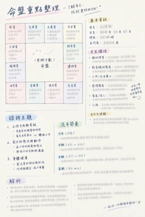

你是不是也有這些困擾？
- 站在轉職、創業或進修的十字路口
- 感情與人際關係反覆卡在相似的地方
- 想了解自己的天賦與適合的工作型態
- 想知道今年的運勢
- 想釐清金錢價值觀，提前布局規畫
他們也曾這樣卡關
以下為調整過的情境示意，我會遵守每個個案的保密
做了五年，還要不要換？
薪水穩定，卻總覺得少了什麼。我們從命盤看他的天賦和工作節奏，才發現他要的不是換公司，而是兼職做喜歡的事情。
為什麼總是遇到相似的人？
每段感情都卡在同一個地方。從命盤看見自己在關係裡的習慣，他第一次知道，原來可以先改變的是自己的溝通方式和設立界線。
想創業，現在是對的時機嗎？
他猶豫了一年。對照今年與未來幾年的節奏，找出適合出手的時間表，及合作夥伴與資金風險提醒，心裡踏實許多。
賺得不少，為什麼就是存不下來？
每個月都告訴自己要存錢，月底卻總是見底。看過命盤裡的金錢價值觀，她才明白自己花錢是為了買安心感，於是換了一個不勉強的理財方法。
孩子的路，我該不該插手？
擔心孩子走歪，又怕管太多。透過命盤看見親子之間不同的節奏，媽媽開始試著放手一點，兩個人的對話也變得輕鬆。
今年怎麼做什麼都不順？
覺得今年特別卡。對照流年才發現，這一年本來就適合沉澱與整理，不是自己不夠努力，心裡的壓力一下子鬆開了。
我能幫你做的
聽完很感動，一周後卻忘了一半
老師把我的命盤講了一個小時，我一直點頭，覺得句句說到心坎裡，走出門時整個人輕飄飄的。
朋友好奇問我：「老師怎麼說？」我張開嘴，只想起兩三句，連要注意的是哪一年都記不得了。
花了錢、花了時間，聽到的一半卻已經還給老師。好多專業術語，我也記不起來。真的很糗很可惜。
所以後來我自己解盤，第一件事就是：把重點寫下來給你。你不用邊聽邊抄，也不怕忘記。
諮詢後，你會拿到這樣的解析
我會附上親手整理的文字版重點，讓你在不確定、猶豫的時候，有個可以回頭對照的參考。
- 你卡關的主題，對應命盤裡看到的原因和各種選擇
- 我用白話整理成重點，不賣弄術語
- 今年的節奏起伏，還有你自己沒注意到的盲點，一次攤開來看
※ 右圖為示意，實際內容依你的命盤與問題而定。

為什麼是我
我不是最資深的老師，
但我會用最認真、最誠實的方式陪你看盤
親手整理文字重點
是我一邊認真看盤、一邊親手寫下的重點紀錄，不是 AI 產的，之後隨時可以回頭翻。
看盤前先花 1～2 天
收到你的命盤和問題後，我會先細讀，不是當場才開始看，所以不算快，但每張都認真。
2 年以上學習與實戰
持續學習、也持續替人解盤，把古人的智慧用在真實的人生問題上。
說實話，不推銷
不適合的問題我會直接說，不用恐嚇話術、不賣改運商品，15 分鐘 LINE 諮詢完全免費。
白話解說＋小行動
不講你聽不懂的術語，並陪你把洞察變成可以立刻開始的小行動。
嚴守個案隱私
你的生辰與談話內容完全保密。同時守住專業界線：不談生死、不取代醫療診斷。
諮詢過的人這樣說
每一則都是諮詢後收到的真實回饋，經同意後分享
「就像有張自己專屬的地圖，趨吉避凶，徐徐前進」近來心有迷茫，家庭、小孩、夫妻相處等等，除了看書自救，也好奇玄學的建議。感謝老師系統性地幫我釐清問題，從事前的提問，到會中專注解惑、分析建議，對自己有很深刻的幫助，就像有張自己專屬的地圖，趨吉避凶，徐徐前進
原始回饋截圖

「廣度就是我的創造力跟靈感連結」妳的解讀很準喔，從女生的視角去解讀我的命盤，給了我很多很多的「很棒」。也謝謝妳跟我說興趣很廣是好的，我相信我不只是做深、還要廣，廣度就是我的創造力跟靈感連結，我才能做出跟別人不一樣的服務跟作品
原始回饋截圖

「像朋友聊天一樣，心裡踏實了不少」跟學姊聊完很放鬆，像朋友聊天一樣～工作、健康、財運都聊得很清楚，心裡踏實了不少，也比較知道怎麼調整自己的步調
原始回饋截圖

「放下了各種糾結，就順利找到了」後來重新看了妳的建議文字，覺得也是符合的。就是因為放下了各種糾結，就順利找到新的月子中心了，而且價格和舒適度都令人滿意
原始回饋截圖


怎麼進行
選擇服務項目
可在 LINE 上先做免費諮詢，確認可以服務的問題，再進一步進行預約，不適合用紫微命盤看的，我也不想讓你白花錢
填寫資料
提供出生資料與想了解的問題
確認時間與付款
完成付款即保留預約時段
諮詢與交付
諮詢當天給你重點摘要，陪你把洞察變成行動
諮詢方案
每次諮詢前，我會花 1～2 天細讀你的命盤和問題
我看盤不算快，但每一張都很認真看
因為我真心想幫每位來找我的夥伴，解開心裡的卡關
諮詢後會提供我親手整理的重點紀錄，不是 AI 產的
你不用自己做筆記，專心聊就好


常見問題
一對一諮詢跟文字版諮詢有什麼差別？
一對一諮詢是 90 分鐘對談，適合需要來回討論的複雜問題
文字版諮詢是聚焦一個問題，5
個工作日內以 LINE／Email
提供書面分析，適合沒時間安排面談，或對面談有些緊張、不自在的人，可以透過閱讀文字報告，沉澱思考，不需要社交
不知道準確的出生時間怎麼辦？
排盤需要精確的出生年、月、日、時，如果不確定可至戶政事務所查閱（台灣地區）
我的生辰和諮詢過程中的問題會保密嗎？
你的生辰資料和諮詢過程中的所有事情都會保密，不會對外分享或公開。
紫微斗數命盤可以討論哪些主題？
只要和你的人生有關，大多都可以討論，不管是
人生方向與目標
工作機會與職涯規劃
事業發展與創業
財務與金錢觀
感情與人際關係
健康與風險提醒
最近卡關、不知道怎麼選擇的事情
紫微斗數都可以從不同角度切入，幫你整理目前的狀況與可能的選擇
如果臨時有事，可以改期嗎？
請於諮詢日前 3 天告知，我們會一起安排新的時間
若當天臨時遲到或未事先通知缺席，等待 15
分鐘後將視同取消，恕無法退費
每個預約時段，都代表有人願意把時間留給自己的生命課題，我也希望公平尊重每一位來諮詢的人
什麼問題不適合來問？
不詢問生死相關議題，以及無法取代醫療診斷，健康疑慮請務必尋求專業醫生建議，紫微斗數僅提供健康與意外風險提醒